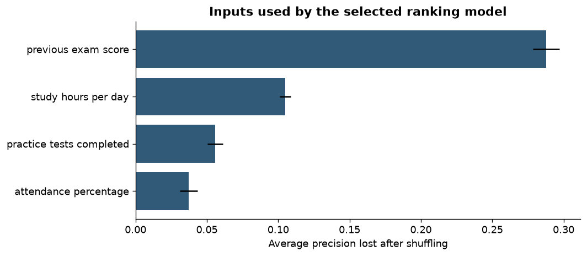
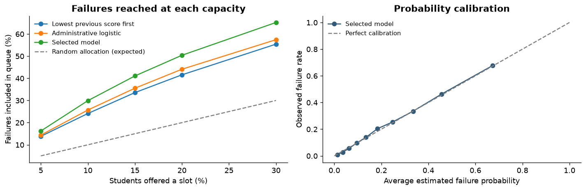

Check where the records came from
The source and dates of this file are unverified. A school must confirm that its own records are reliable and were collected before the exam.
A project for student support
This tool helps teachers choose which students to talk to first, using past school and study records.
Teachers review the list and decide what help to offer.
An early version built from 100,000 saved exam records.
01 / The problem
A teacher may have time for only a few check-ins or tutoring sessions. Waiting for exam results can mean finding a problem too late.
The idea is simple: use earlier records to suggest which students may need a conversation first.
02 / How it works
The tool suggests a list. People decide what happens next.
Bring previous results, attendance, completed assignments, and study habits. These records must come from before the exam.
Set the number of available places. The tool suggests students who appear most likely to struggle in the exam.
A teacher reviews each student’s situation and offers suitable help. Students can also ask for help without being on the list.
For example
If a teacher has time for 25 check-ins, the tool makes a list of 25 students to review, with recorded issues to discuss.
03 / The results
We tested it on 20,000 saved exam records. These records were not used to build or choose the tool.
Both lists have the same number of places.
This tool included 191 more students who later did not pass, using the same 2,000 places.
The simpler list uses past results, attendance, and completed assignments. This tool also uses study records.
An exam score below 50 counts as not passing. This matches the labels in the file.
3,169 students who did not pass were still outside this tool’s list. Teachers need other ways to offer help too.
This was a check using saved records. No students were contacted. It does not show that the tool improved exam results.
of students on this tool’s list later did not pass.
of all students who did not pass were included on this tool’s list.
The result is an estimate from these records. When we repeated the calculation with different samples of the test records, the share who did not pass on the 10% list was about 66%–70% (a 95% uncertainty range).
Open the full results tableWe split the 100,000 records into separate groups: 60,000 to learn patterns, 10,000 to adjust its risk estimates, 10,000 to choose the tool, and 20,000 for the final check.
The tool never sees the current exam’s results or answers when making its list. Gender and family income are also left out. We checked results across groups, but those checks do not guarantee fair decisions in every school.
Every approach was allowed the same number of places. The full analysis shows other comparisons and the checks behind the result.
Read the full analysisThe selected method is calibrated logistic regression. On the final test, ROC AUC was 0.818 and the Brier score was 0.1329. Definitions, model comparisons, group checks, and uncertainty estimates are in the notebook.


Use a CSV table with the required columns and records from before the exam. This example creates a list of 25 students for a teacher to review.
python score_students.py \
--input pre_exam_snapshot.csv \
--slots 25 \
--output teacher_worklist.csv04 / What comes next
A better list could help staff use their time well. A school would still need to check whether the help improves students’ results.
05 / Project files
The full analysis, code, and instructions are available here.
A document with the analysis and Python code. Upload it to Kaggle and add a copy of the source CSV you are allowed to use.
The code, result tables, and steps to repeat the analysis.
The notebook, trained tool, result tables, and instructions. The original student CSV is not included.